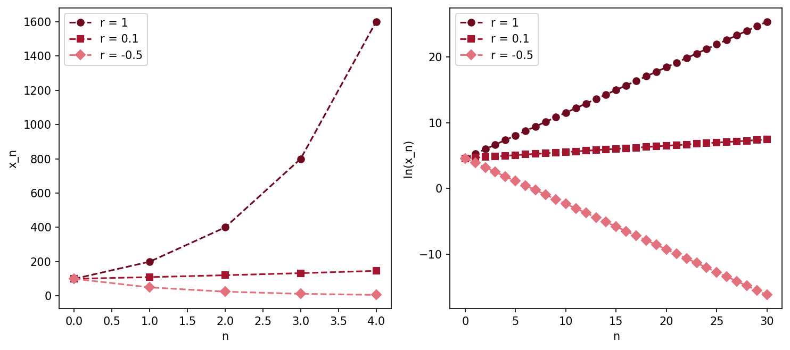
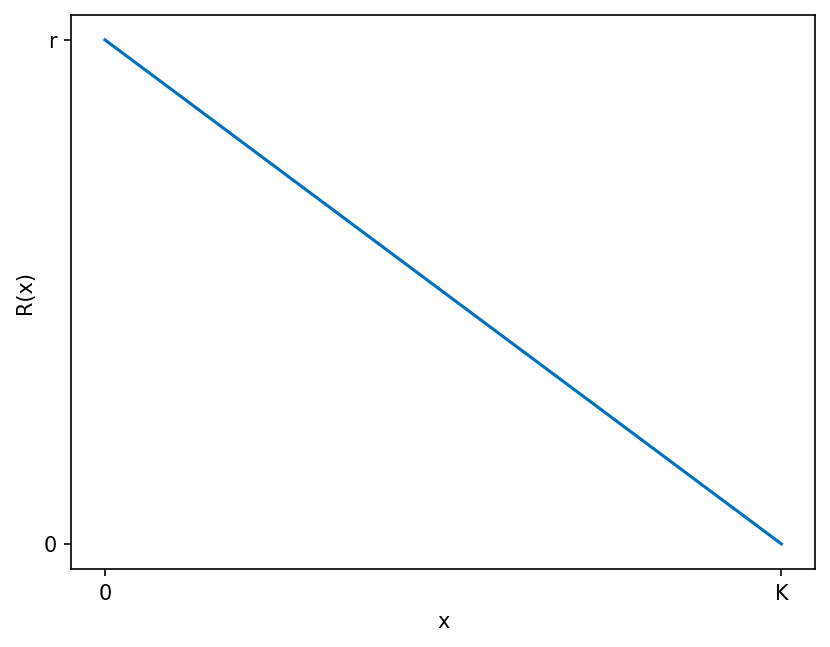
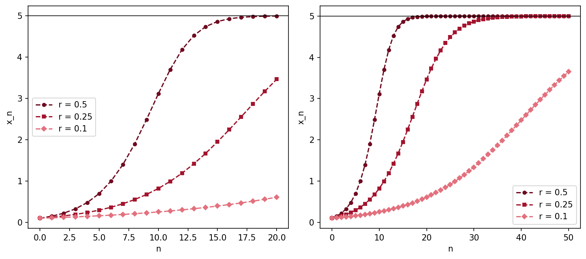
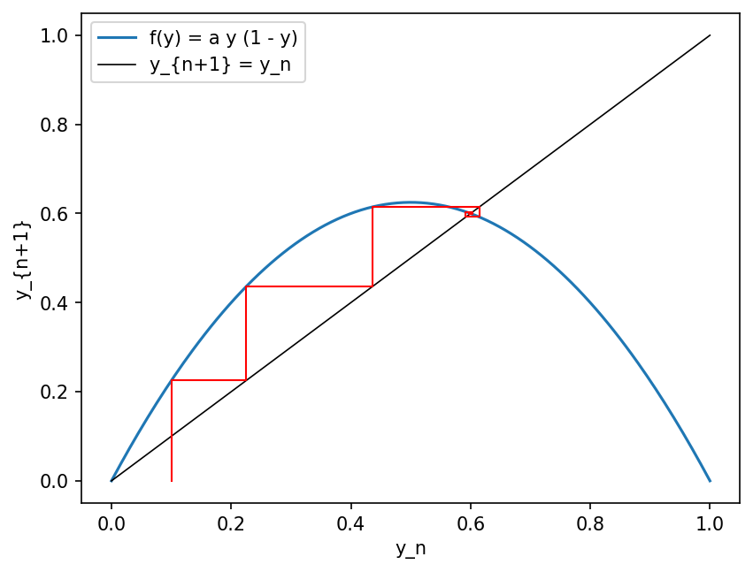
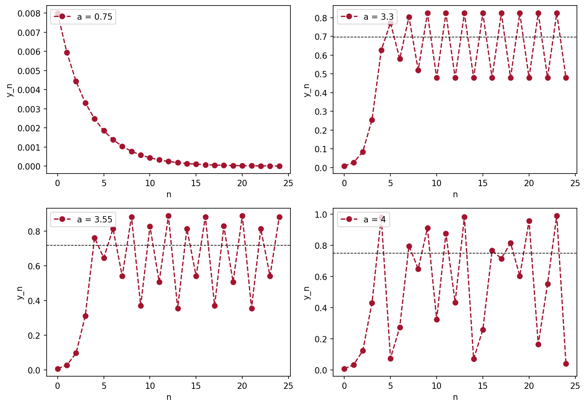
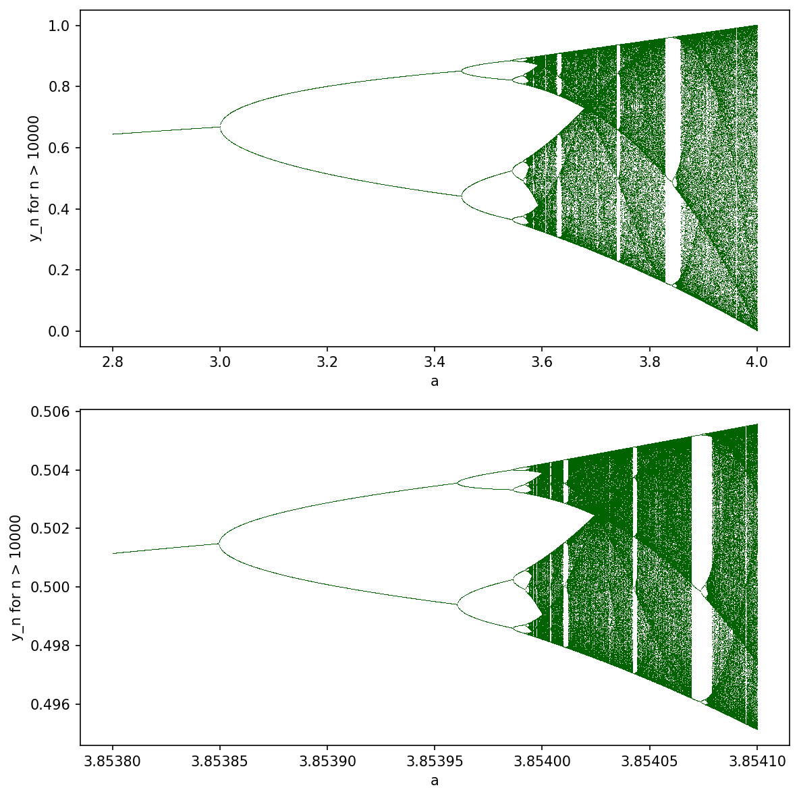
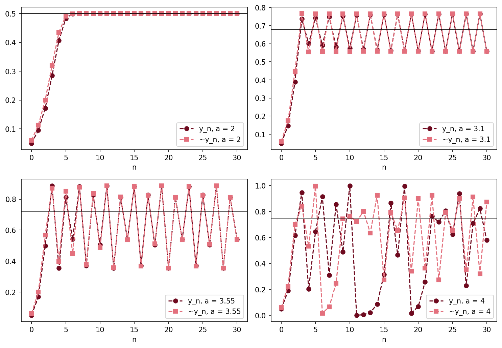

Chapter 1 · Discrete Dynamical Systems with One Variable
1.3Logistic Growth Model
A population cannot grow without limit. In the logistic model the growth rate decreases with the population size and becomes zero at the carrying capacity K. After a change of variables the model depends on a single parameter a only, and already this simple equation shows cycles and chaos.
For each figure of the section you will find the program that produces it. Change parameters and initial values and observe what happens. Figure and equation numbers refer to the book.
Fig. 1.17
Geometric growth with growth rate r
xn+1 = (1 + r) xn, x0 = 100
With a constant growth rate, ln(xn) depends linearly on n; the slope is ln(1 + r). This is how exponential growth is recognized in measured data.

# Fig. 1.17: Geometric growth with growth rate r (book, Section 1.3, Eq. 1.24)
# x_{n+1} = (1 + r) x_n with x_0 = 100; left x_n, right ln(x_n)
# (c) 2026 Philipp Kügler · Program for the book "Dynamical Systems in the Life Sciences" · MIT License (see LICENSE)
using Printf, Plots
x0 = 100; N = 30
n = 0:N
rot = [RGB(0.43, 0.04, 0.12), RGB(0.64, 0.08, 0.18), RGB(0.89, 0.44, 0.49)]; zeichen = [:circle, :rect, :diamond]
p1 = plot(xlabel = "n", ylabel = "x_n", legend = :topleft)
p2 = plot(xlabel = "n", ylabel = "ln(x_n)", legend = :topleft)
for (i, r) in enumerate([1, 0.1, -0.5])
x = x0 .* (1 + r) .^ n
plot!(p1, n[1:5], x[1:5], ls = :dash, marker = zeichen[i], color = rot[i], label = "r = $r")
plot!(p2, n, log.(x), ls = :dash, marker = zeichen[i], color = rot[i], label = "r = $r")
@printf("r = %g: slope of ln(x_n) = ln(1 + r) = %.4f\n", r, log(1 + r))
end
display(plot(p1, p2, layout = (1, 2), size = (900, 420)))% Fig. 1.17: Geometric growth with growth rate r (book, Section 1.3, Eq. 1.24)
% x_{n+1} = (1 + r) x_n with x_0 = 100; left x_n, right ln(x_n)
% (c) 2026 Philipp Kügler · Program for the book "Dynamical Systems in the Life Sciences" · MIT License (see LICENSE)
x0 = 100; N = 30;
n = 0:N;
rot = [0.43 0.04 0.12; 0.64 0.08 0.18; 0.89 0.44 0.49]; marker = 'osd';
rs = [1 0.1 -0.5];
for i = 1:3
r = rs(i);
x = x0 * (1 + r) .^ n;
subplot(1, 2, 1); hold on
plot(n(1:5), x(1:5), ['--' marker(i)], 'Color', rot(i, :), 'DisplayName', sprintf('r = %g', r));
subplot(1, 2, 2); hold on
plot(n, log(x), ['--' marker(i)], 'Color', rot(i, :), 'DisplayName', sprintf('r = %g', r));
fprintf('r = %g: slope of ln(x_n) = ln(1 + r) = %.4f\n', r, log(1 + r));
end
subplot(1, 2, 1); hold off; xlabel('n'); ylabel('x_n'); legend('show');
subplot(1, 2, 2); hold off; xlabel('n'); ylabel('ln(x_n)'); legend('show');# Fig. 1.17: Geometric growth with growth rate r (book, Section 1.3, Eq. 1.24)
# x_{n+1} = (1 + r) x_n with x_0 = 100; left x_n, right ln(x_n)
# (c) 2026 Philipp Kügler · Program for the book "Dynamical Systems in the Life Sciences" · MIT License (see LICENSE)
import numpy as np
import matplotlib.pyplot as plt
x0, N = 100.0, 30
n = np.arange(N + 1)
rot = [(0.43, 0.04, 0.12), (0.64, 0.08, 0.18), (0.89, 0.44, 0.49)]
fig, axs = plt.subplots(1, 2, figsize=(10, 4.5))
for r, c, m in zip([1, 0.1, -0.5], rot, "osD"):
x = x0 * (1 + r)**n
axs[0].plot(n[:5], x[:5], "--", marker=m, color=c, label=f"r = {r}")
axs[1].plot(n, np.log(x), "--", marker=m, color=c, label=f"r = {r}")
print(f"r = {r}: slope of ln(x_n) = ln(1 + r) = {np.log(1 + r):.4f}")
axs[0].set_xlabel("n"); axs[0].set_ylabel("x_n"); axs[0].legend()
axs[1].set_xlabel("n"); axs[1].set_ylabel("ln(x_n)"); axs[1].legend()
plt.tight_layout()
plt.show()# Fig. 1.17: Geometric growth with growth rate r (book, Section 1.3, Eq. 1.24)
# x_{n+1} = (1 + r) x_n with x_0 = 100; left x_n, right ln(x_n)
# (c) 2026 Philipp Kügler · Program for the book "Dynamical Systems in the Life Sciences" · MIT License (see LICENSE)
x0 <- 100; N <- 30
n <- 0:N
rot <- c(rgb(0.43, 0.04, 0.12), rgb(0.64, 0.08, 0.18), rgb(0.89, 0.44, 0.49)); zeichen <- c(16, 15, 18)
rs <- c(1, 0.1, -0.5)
par(mfrow = c(1, 2))
plot(NULL, xlim = c(0, 4), ylim = c(0, 1700), xlab = "n", ylab = "x_n")
for (i in 1:3) {
x <- x0 * (1 + rs[i])^n
lines(n[1:5], x[1:5], type = "o", lty = 2, pch = zeichen[i], col = rot[i])
}
legend("topleft", legend = sprintf("r = %g", rs), col = rot, pch = zeichen, lty = 2)
plot(NULL, xlim = c(0, N), ylim = c(-16, 26), xlab = "n", ylab = "ln(x_n)")
for (i in 1:3) {
r <- rs[i]
x <- x0 * (1 + r)^n
lines(n, log(x), type = "o", lty = 2, pch = zeichen[i], col = rot[i])
cat(sprintf("r = %g: slope of ln(x_n) = ln(1 + r) = %.4f\n", r, log(1 + r)))
}Output in the command window
r = 1: slope of ln(x_n) = ln(1 + r) = 0.6931
r = 0.1: slope of ln(x_n) = ln(1 + r) = 0.0953
r = -0.5: slope of ln(x_n) = ln(1 + r) = -0.6931Fig. 1.18
Rate function
R(x) = r (1 − x/K)
The per capita growth rate is almost r for a small population and decreases linearly to zero at x = K.

# Fig. 1.18: Rate function of the logistic growth model (book, Section 1.3, Eq. 1.26)
# R(x) = r (1 - x/K): a small stock grows almost at the rate r, at x = K growth comes to a halt
# (c) 2026 Philipp Kügler · Program for the book "Dynamical Systems in the Life Sciences" · MIT License (see LICENSE)
using Printf, Plots
r = 1; K = 5
R(x) = r * (1 - x / K)
for x in (0, 1, 2.5, 5)
@printf("R(%g) = %.2f\n", x, R(x))
end
x = range(0, K, length = 100)
display(plot(x, R.(x), color = RGB(0, 0.447, 0.741), lw = 2, legend = false, xlabel = "x", ylabel = "R(x)",
xticks = ([0, K], ["0", "K"]), yticks = ([0, r], ["0", "r"])))% Fig. 1.18: Rate function of the logistic growth model (book, Section 1.3, Eq. 1.26)
% R(x) = r (1 - x/K): a small stock grows almost at the rate r, at x = K growth comes to a halt
% (c) 2026 Philipp Kügler · Program for the book "Dynamical Systems in the Life Sciences" · MIT License (see LICENSE)
r = 1; K = 5;
R = @(x) r * (1 - x / K);
for x = [0 1 2.5 5]
fprintf('R(%g) = %.2f\n', x, R(x));
end
x = linspace(0, K, 100);
plot(x, R(x), 'Color', [0 0.447 0.741]);
set(gca, 'XTick', [0 K], 'XTickLabel', {'0', 'K'}, 'YTick', [0 r], 'YTickLabel', {'0', 'r'});
xlabel('x'); ylabel('R(x)');# Fig. 1.18: Rate function of the logistic growth model (book, Section 1.3, Eq. 1.26)
# R(x) = r (1 - x/K): a small stock grows almost at the rate r, at x = K growth comes to a halt
# (c) 2026 Philipp Kügler · Program for the book "Dynamical Systems in the Life Sciences" · MIT License (see LICENSE)
import numpy as np
import matplotlib.pyplot as plt
r, K = 1.0, 5.0
R = lambda x: r * (1 - x / K)
for x in [0, 1, 2.5, 5]:
print(f"R({x}) = {R(x):.2f}")
x = np.linspace(0, K, 100)
plt.plot(x, R(x), color=(0, 0.447, 0.741))
plt.xticks([0, K], ["0", "K"]); plt.yticks([0, r], ["0", "r"])
plt.xlabel("x"); plt.ylabel("R(x)")
plt.show()# Fig. 1.18: Rate function of the logistic growth model (book, Section 1.3, Eq. 1.26)
# R(x) = r (1 - x/K): a small stock grows almost at the rate r, at x = K growth comes to a halt
# (c) 2026 Philipp Kügler · Program for the book "Dynamical Systems in the Life Sciences" · MIT License (see LICENSE)
r <- 1; K <- 5
R <- function(x) r * (1 - x / K)
for (x in c(0, 1, 2.5, 5)) cat(sprintf("R(%g) = %.2f\n", x, R(x)))
x <- seq(0, K, length.out = 100)
plot(x, R(x), type = "l", col = rgb(0, 0.447, 0.741), lwd = 2, xaxt = "n", yaxt = "n", xlab = "x", ylab = "R(x)")
axis(1, at = c(0, K), labels = c("0", "K")); axis(2, at = c(0, r), labels = c("0", "r"))Output in the command window
R(0) = 1.00
R(1) = 0.80
R(2.5) = 0.50
R(5) = 0.00Fig. 1.20
Simulation of the logistic model
xn+1 = xn + r (1 − xn/K) xn
Three growth rates with the same carrying capacity K = 5 and initial value x0 = 0.1. The larger r, the faster the population reaches K.

# Fig. 1.20: Simulation of the logistic growth model (book, Section 1.3, Eq. 1.26)
# x_{n+1} = x_n + r (1 - x_n/K) x_n with K = 5, x_0 = 0.1, and three growth rates r; 20 (left) and 50 (right) steps
# (c) 2026 Philipp Kügler · Program for the book "Dynamical Systems in the Life Sciences" · MIT License (see LICENSE)
using Printf, Plots
K = 5; x0 = 0.1
rot = [RGB(0.43, 0.04, 0.12), RGB(0.64, 0.08, 0.18), RGB(0.89, 0.44, 0.49)]; zeichen = [:circle, :rect, :diamond]
bilder = []
for N in (20, 50)
n = 0:N
p = plot(xlabel = "n", ylabel = "x_n", legend = :bottomright)
hline!(p, [K], color = :black, label = "")
for (i, r) in enumerate([0.5, 0.25, 0.1])
x = zeros(N + 1)
x[1] = x0 # Julia counts from 1: x[1] is x_0
for k in 1:N
x[k + 1] = x[k] + r * (1 - x[k] / K) * x[k]
end
plot!(p, n, x, ls = :dash, marker = zeichen[i], ms = 3, color = rot[i], label = "r = $r")
@printf("N = %d, r = %g: x_N = %.4f\n", N, r, x[N + 1])
end
push!(bilder, p)
end
display(plot(bilder..., layout = (1, 2), size = (900, 420)))% Fig. 1.20: Simulation of the logistic growth model (book, Section 1.3, Eq. 1.26)
% x_{n+1} = x_n + r (1 - x_n/K) x_n with K = 5, x_0 = 0.1, and three growth rates r; 20 (left) and 50 (right) steps
% (c) 2026 Philipp Kügler · Program for the book "Dynamical Systems in the Life Sciences" · MIT License (see LICENSE)
K = 5; x0 = 0.1;
raten = [0.5 0.25 0.1];
rot = [0.43 0.04 0.12; 0.64 0.08 0.18; 0.89 0.44 0.49]; marker = 'osd';
Ns = [20 50];
for p = 1:2
N = Ns(p); n = 0:N;
subplot(1, 2, p); hold on
for i = 1:3
r = raten(i);
x = zeros(1, N + 1);
x(1) = x0; % MATLAB counts from 1: x(1) is x_0
for k = 1:N
x(k + 1) = x(k) + r * (1 - x(k) / K) * x(k);
end
plot(n, x, ['--' marker(i)], 'Color', rot(i, :), 'MarkerSize', 4, 'DisplayName', sprintf('r = %g', r));
fprintf('N = %d, r = %g: x_N = %.4f\n', N, r, x(N + 1));
end
plot([0 N], [K K], 'k-', 'HandleVisibility', 'off');
hold off; xlabel('n'); ylabel('x_n'); legend('show', 'Location', 'southeast');
end# Fig. 1.20: Simulation of the logistic growth model (book, Section 1.3, Eq. 1.26)
# x_{n+1} = x_n + r (1 - x_n/K) x_n with K = 5, x_0 = 0.1, and three growth rates r; 20 (left) and 50 (right) steps
# (c) 2026 Philipp Kügler · Program for the book "Dynamical Systems in the Life Sciences" · MIT License (see LICENSE)
import numpy as np
import matplotlib.pyplot as plt
K, x0 = 5.0, 0.1
raten = [0.5, 0.25, 0.1]
rot = [(0.43, 0.04, 0.12), (0.64, 0.08, 0.18), (0.89, 0.44, 0.49)]
fig, axs = plt.subplots(1, 2, figsize=(10, 4.5))
for ax, N in zip(axs, (20, 50)):
n = np.arange(N + 1)
for r, c, m in zip(raten, rot, "osD"):
x = np.zeros(N + 1)
x[0] = x0
for k in range(N):
x[k + 1] = x[k] + r * (1 - x[k] / K) * x[k]
ax.plot(n, x, "--", marker=m, ms=4, color=c, label=f"r = {r}")
print(f"N = {N}, r = {r}: x_N = {x[N]:.4f}")
ax.axhline(K, color="k", lw=0.8)
ax.set_xlabel("n"); ax.set_ylabel("x_n"); ax.legend()
plt.tight_layout()
plt.show()# Fig. 1.20: Simulation of the logistic growth model (book, Section 1.3, Eq. 1.26)
# x_{n+1} = x_n + r (1 - x_n/K) x_n with K = 5, x_0 = 0.1, and three growth rates r; 20 (left) and 50 (right) steps
# (c) 2026 Philipp Kügler · Program for the book "Dynamical Systems in the Life Sciences" · MIT License (see LICENSE)
K <- 5; x0 <- 0.1
raten <- c(0.5, 0.25, 0.1)
rot <- c(rgb(0.43, 0.04, 0.12), rgb(0.64, 0.08, 0.18), rgb(0.89, 0.44, 0.49)); zeichen <- c(16, 15, 18)
par(mfrow = c(1, 2))
for (N in c(20, 50)) {
n <- 0:N
plot(NULL, xlim = c(0, N), ylim = c(0, 5.3), xlab = "n", ylab = "x_n")
abline(h = K)
for (i in 1:3) {
r <- raten[i]
x <- numeric(N + 1)
x[1] <- x0 # R counts from 1: x[1] is x_0
for (k in 1:N) x[k + 1] <- x[k] + r * (1 - x[k] / K) * x[k]
lines(n, x, type = "o", lty = 2, pch = zeichen[i], cex = 0.6, col = rot[i])
cat(sprintf("N = %d, r = %g: x_N = %.4f\n", N, r, x[N + 1]))
}
legend("bottomright", legend = sprintf("r = %g", raten), col = rot, pch = zeichen, lty = 2)
}Output in the command window
N = 20, r = 0.5: x_N = 4.9955
N = 20, r = 0.25: x_N = 3.4638
N = 20, r = 0.1: x_N = 0.6089
N = 50, r = 0.5: x_N = 5.0000
N = 50, r = 0.25: x_N = 4.9996
N = 50, r = 0.1: x_N = 3.6486Fig. 1.21
Update function and staircase diagram
f(y) = a y (1 − y), a = 2.5
The staircase shows the sequence geometrically: vertically to the graph of f, horizontally to the diagonal. It runs toward the steady state 1 − 1/a = 0.6.

# Fig. 1.21: Update function and staircase diagram (book, Section 1.3, Eq. 1.30)
# f(y) = a y (1 - y) with a = 2.5, initial value y_0 = 0.1
# (c) 2026 Philipp Kügler · Program for the book "Dynamical Systems in the Life Sciences" · MIT License (see LICENSE)
using Printf, Plots
a = 2.5; y0 = 0.1; N = 12
f(y) = a * y * (1 - y)
y = range(0, 1, length = 200)
p = plot(y, f.(y), color = RGB(0, 0.447, 0.741), lw = 2, label = "f(y) = a y (1 - y)", legend = :topleft,
xlims = (0, 1), ylims = (0, 1), xlabel = "y_n", ylabel = "y_{n+1}")
plot!(p, [0, 1], [0, 1], color = :black, label = "y_{n+1} = y_n")
# staircase: vertically to the graph, horizontally to the diagonal
yn = y0
px = [yn]; py = [0.0]
for k in 1:N
global yn
yneu = f(yn)
append!(px, [yn, yneu]); append!(py, [yneu, yneu])
yn = yneu
end
plot!(p, px, py, color = RGB(0.64, 0.08, 0.18), label = "")
@printf("y_%d = %.6f, steady state 1 - 1/a = %.6f\n", N, yn, 1 - 1/a)
display(p)% Fig. 1.21: Update function and staircase diagram (book, Section 1.3, Eq. 1.30)
% f(y) = a y (1 - y) with a = 2.5, initial value y_0 = 0.1
% (c) 2026 Philipp Kügler · Program for the book "Dynamical Systems in the Life Sciences" · MIT License (see LICENSE)
a = 2.5; y0 = 0.1; N = 12;
f = @(y) a * y .* (1 - y);
y = linspace(0, 1, 200);
plot(y, f(y), 'Color', [0 0.447 0.741]); hold on
plot([0 1], [0 1], 'k-');
% staircase: vertically to the graph, horizontally to the diagonal
yn = y0;
px = yn; py = 0;
for k = 1:N
yneu = f(yn);
px = [px yn yneu]; py = [py yneu yneu];
yn = yneu;
end
plot(px, py, 'Color', [0.64 0.08 0.18]);
fprintf('y_%d = %.6f, steady state 1 - 1/a = %.6f\n', N, yn, 1 - 1/a);
xlabel('y_n'); ylabel('y_{n+1}'); legend('f(y) = a y (1 - y)', 'y_{n+1} = y_n', 'Location', 'northwest');
hold off# Fig. 1.21: Update function and staircase diagram (book, Section 1.3, Eq. 1.30)
# f(y) = a y (1 - y) with a = 2.5, initial value y_0 = 0.1
# (c) 2026 Philipp Kügler · Program for the book "Dynamical Systems in the Life Sciences" · MIT License (see LICENSE)
import numpy as np
import matplotlib.pyplot as plt
a, y0, N = 2.5, 0.1, 12
f = lambda y: a * y * (1 - y)
y = np.linspace(0, 1, 200)
plt.plot(y, f(y), label="f(y) = a y (1 - y)")
plt.plot([0, 1], [0, 1], "k", lw=0.8, label="y_{n+1} = y_n")
# staircase: vertically to the graph, horizontally to the diagonal
yn = y0
px, py = [yn], [0.0]
for k in range(N):
yneu = f(yn)
px += [yn, yneu]; py += [yneu, yneu]
yn = yneu
plt.plot(px, py, "r-", lw=1)
print(f"y_{N} = {yn:.6f}, steady state 1 - 1/a = {1 - 1/a:.6f}")
plt.xlabel("y_n"); plt.ylabel("y_{n+1}"); plt.legend()
plt.show()# Fig. 1.21: Update function and staircase diagram (book, Section 1.3, Eq. 1.30)
# f(y) = a y (1 - y) with a = 2.5, initial value y_0 = 0.1
# (c) 2026 Philipp Kügler · Program for the book "Dynamical Systems in the Life Sciences" · MIT License (see LICENSE)
a <- 2.5; y0 <- 0.1; N <- 12
f <- function(y) a * y * (1 - y)
y <- seq(0, 1, length.out = 200)
plot(y, f(y), type = "l", col = rgb(0, 0.447, 0.741), lwd = 2, xlim = c(0, 1), ylim = c(0, 1), xlab = "y_n", ylab = "y_{n+1}")
abline(0, 1)
# staircase: vertically to the graph, horizontally to the diagonal
yn <- y0
px <- yn; py <- 0
for (k in 1:N) {
yneu <- f(yn)
px <- c(px, yn, yneu); py <- c(py, yneu, yneu)
yn <- yneu
}
lines(px, py, col = rgb(0.64, 0.08, 0.18))
cat(sprintf("y_%d = %.6f, steady state 1 - 1/a = %.6f\n", N, yn, 1 - 1/a))
legend("topleft", legend = c("f(y) = a y (1 - y)", "y_{n+1} = y_n"), col = c(rgb(0, 0.447, 0.741), "black"), lwd = c(2, 1))Output in the command window
y_12 = 0.599970, steady state 1 - 1/a = 0.600000Fig. 1.22
Parameter study
yn+1 = a yn (1 − yn), y0 = 0.008
For a = 0.75 the population dies out, for a = 3.3 it alternates between two values, for a = 3.55 between four, for a = 4 it behaves chaotically.

# Fig. 1.22: Parameter study of the logistic growth model (book, Section 1.3, Eq. 1.28)
# y_{n+1} = a y_n (1 - y_n) with y_0 = 0.008 and a = 0.75, 3.3, 3.55, 4
# (c) 2026 Philipp Kügler · Program for the book "Dynamical Systems in the Life Sciences" · MIT License (see LICENSE)
using Printf, Plots
y0 = 0.008; N = 24
n = 0:N
bilder = []
for a in (0.75, 3.3, 3.55, 4)
y = zeros(N + 1)
y[1] = y0
for k in 1:N
y[k + 1] = a * y[k] * (1 - y[k])
end
p = plot(n, y, ls = :dash, marker = :circle, color = RGB(0.64, 0.08, 0.18), label = "a = $a", legend = :topleft,
xlabel = "n", ylabel = "y_n")
a > 1 && hline!(p, [1 - 1/a], ls = :dash, color = :black, label = "") # steady state 1 - 1/a
push!(bilder, p)
println(@sprintf("a = %g: y_21 ... y_24 = ", a), join([@sprintf("%.4g", v) for v in y[22:25]], " "))
end
display(plot(bilder..., layout = (2, 2), size = (900, 650)))% Fig. 1.22: Parameter study of the logistic growth model (book, Section 1.3, Eq. 1.28)
% y_{n+1} = a y_n (1 - y_n) with y_0 = 0.008 and a = 0.75, 3.3, 3.55, 4
% (c) 2026 Philipp Kügler · Program for the book "Dynamical Systems in the Life Sciences" · MIT License (see LICENSE)
y0 = 0.008; N = 24;
n = 0:N;
as = [0.75 3.3 3.55 4];
for p = 1:4
a = as(p);
y = zeros(1, N + 1);
y(1) = y0;
for k = 1:N
y(k + 1) = a * y(k) * (1 - y(k));
end
subplot(2, 2, p);
plot(n, y, '--o', 'Color', [0.64 0.08 0.18], 'DisplayName', sprintf('a = %g', a)); hold on
if a > 1
plot([0 N], [1 - 1/a, 1 - 1/a], 'k--', 'HandleVisibility', 'off'); % steady state 1 - 1/a
end
hold off; xlabel('n'); ylabel('y_n'); legend('show', 'Location', 'northwest');
fprintf('a = %g: y_21 ... y_24 = ', a); fprintf('%.4g ', y(22:25)); fprintf('\n');
end# Fig. 1.22: Parameter study of the logistic growth model (book, Section 1.3, Eq. 1.28)
# y_{n+1} = a y_n (1 - y_n) with y_0 = 0.008 and a = 0.75, 3.3, 3.55, 4
# (c) 2026 Philipp Kügler · Program for the book "Dynamical Systems in the Life Sciences" · MIT License (see LICENSE)
import numpy as np
import matplotlib.pyplot as plt
y0, N = 0.008, 24
n = np.arange(N + 1)
fig, axs = plt.subplots(2, 2, figsize=(10, 7))
for ax, a in zip(axs.flat, [0.75, 3.3, 3.55, 4]):
y = np.zeros(N + 1)
y[0] = y0
for k in range(N):
y[k + 1] = a * y[k] * (1 - y[k])
ax.plot(n, y, "o--", color=(0.64, 0.08, 0.18), label=f"a = {a}")
if a > 1:
ax.axhline(1 - 1 / a, color="k", ls="--", lw=0.8) # steady state 1 - 1/a
ax.set_xlabel("n"); ax.set_ylabel("y_n"); ax.legend(loc="upper left")
print(f"a = {a}: y_21 ... y_24 =", " ".join(f"{v:.4g}" for v in y[21:]))
plt.tight_layout()
plt.show()# Fig. 1.22: Parameter study of the logistic growth model (book, Section 1.3, Eq. 1.28)
# y_{n+1} = a y_n (1 - y_n) with y_0 = 0.008 and a = 0.75, 3.3, 3.55, 4
# (c) 2026 Philipp Kügler · Program for the book "Dynamical Systems in the Life Sciences" · MIT License (see LICENSE)
y0 <- 0.008; N <- 24
n <- 0:N
par(mfrow = c(2, 2))
for (a in c(0.75, 3.3, 3.55, 4)) {
y <- numeric(N + 1)
y[1] <- y0
for (k in 1:N) y[k + 1] <- a * y[k] * (1 - y[k])
plot(n, y, type = "o", lty = 2, pch = 16, col = rgb(0.64, 0.08, 0.18), xlab = "n", ylab = "y_n", main = sprintf("a = %g", a))
if (a > 1) abline(h = 1 - 1/a, lty = 2) # steady state 1 - 1/a
cat(sprintf("a = %g: y_21 ... y_24 =", a), sprintf("%.4g", y[22:25]), "\n")
}Output in the command window
a = 0.75: y_21 ... y_24 = 1.844e-05 1.383e-05 1.037e-05 7.777e-06
a = 3.3: y_21 ... y_24 = 0.8236 0.4794 0.8236 0.4794
a = 3.55: y_21 ... y_24 = 0.3548 0.8127 0.5404 0.8817
a = 4: y_21 ... y_24 = 0.1649 0.5507 0.9897 0.04071Fig. 1.23
Bifurcation diagram
yn+1 = a yn (1 − yn), 2.8 ≤ a ≤ 4
For each parameter value a the sequence is computed for 10,000 steps, and the long-term behavior is plotted. In the tiny detail at the bottom the same branching pattern reappears.

# Fig. 1.23: Bifurcation diagram of the logistic growth model (book, Section 1.3, Eq. 1.28)
# y_{n+1} = a y_n (1 - y_n): for each value of a, the long-term behavior after n_* = 10000 steps is plotted
# top: 2.8 <= a <= 4; bottom: detail 3.8538 <= a <= 3.8541, 0.494 <= y <= 0.506 (the pattern recurs)
# (c) 2026 Philipp Kügler · Program for the book "Dynamical Systems in the Life Sciences" · MIT License (see LICENSE)
using Printf, Plots
gruen = RGB(0, 0.39, 0)
bilder = []
for (a, behalten, fenster) in [(range(2.8, 4.0, length = 2401), 200, (0, 1)),
(range(3.8538, 3.8541, length = 1501), 6000, (0.494, 0.506))]
y = fill(0.9, length(a)) # all parameter values at once (vector)
for k in 1:10000 # transient
y = a .* y .* (1 .- y)
end
A = Float64[]; Y = Float64[]
for k in 1:behalten # collect long-term behavior
y = a .* y .* (1 .- y)
m = (y .> fenster[1]) .& (y .< fenster[2])
append!(A, a[m]); append!(Y, y[m])
end
push!(bilder, scatter(A, Y, ms = 0.5, msw = 0, color = gruen, legend = false, xlabel = "a", ylabel = "y_n for n > 10000"))
end
display(plot(bilder..., layout = (2, 1), size = (800, 700)))
a = 3.2; y = 0.9 # example a = 3.2: two values alternate (2-cycle)
for k in 1:10000
global y = a * y * (1 - y)
end
@printf("a = 3.2: 2-cycle %.4f <-> %.4f\n", y, a * y * (1 - y))% Fig. 1.23: Bifurcation diagram of the logistic growth model (book, Section 1.3, Eq. 1.28)
% y_{n+1} = a y_n (1 - y_n): for each value of a, the long-term behavior after n_* = 10000 steps is plotted
% top: 2.8 <= a <= 4; bottom: detail 3.8538 <= a <= 3.8541, 0.494 <= y <= 0.506 (the pattern recurs)
% (c) 2026 Philipp Kügler · Program for the book "Dynamical Systems in the Life Sciences" · MIT License (see LICENSE)
gruen = [0 0.39 0];
bereiche = {linspace(2.8, 4.0, 2401), linspace(3.8538, 3.8541, 1501)};
behalten = [200 6000];
fenster = [0 1; 0.494 0.506];
for p = 1:2
a = bereiche{p};
y = 0.9 * ones(size(a)); % all parameter values at once (vector)
for k = 1:10000 % transient
y = a .* y .* (1 - y);
end
A = []; Y = [];
for k = 1:behalten(p) % collect long-term behavior
y = a .* y .* (1 - y);
m = (y > fenster(p, 1)) & (y < fenster(p, 2));
A = [A a(m)]; Y = [Y y(m)];
end
subplot(2, 1, p);
plot(A, Y, '.', 'Color', gruen, 'MarkerSize', 1);
xlabel('a'); ylabel('y_n for n > 10000');
end
a = 3.2; y = 0.9; % example a = 3.2: two values alternate (2-cycle)
for k = 1:10000
y = a * y * (1 - y);
end
fprintf('a = 3.2: 2-cycle %.4f <-> %.4f\n', y, a * y * (1 - y));# Fig. 1.23: Bifurcation diagram of the logistic growth model (book, Section 1.3, Eq. 1.28)
# y_{n+1} = a y_n (1 - y_n): for each value of a, the long-term behavior after n_* = 10000 steps is plotted
# top: 2.8 <= a <= 4; bottom: detail 3.8538 <= a <= 3.8541, 0.494 <= y <= 0.506 (the pattern recurs)
# (c) 2026 Philipp Kügler · Program for the book "Dynamical Systems in the Life Sciences" · MIT License (see LICENSE)
import numpy as np
import matplotlib.pyplot as plt
def bifurkation(a, behalten, fenster=(0, 1)):
y = np.full_like(a, 0.9) # all parameter values at once (vector)
for _ in range(10000): # transient
y = a * y * (1 - y)
A, Y = [], []
for _ in range(behalten): # collect long-term behavior
y = a * y * (1 - y)
m = (y > fenster[0]) & (y < fenster[1])
A.append(a[m]); Y.append(y[m])
return np.concatenate(A), np.concatenate(Y)
fig, axs = plt.subplots(2, 1, figsize=(8, 8))
A, Y = bifurkation(np.linspace(2.8, 4.0, 2401), 200)
axs[0].plot(A, Y, ",", color=(0, 0.39, 0))
axs[0].set_xlabel("a"); axs[0].set_ylabel("y_n for n > 10000")
A, Y = bifurkation(np.linspace(3.8538, 3.8541, 1501), 6000, fenster=(0.494, 0.506))
axs[1].plot(A, Y, ",", color=(0, 0.39, 0))
axs[1].set_xlabel("a"); axs[1].set_ylabel("y_n for n > 10000")
axs[1].ticklabel_format(useOffset=False)
plt.tight_layout()
a = np.array([3.2]); y = np.array([0.9]) # example a = 3.2: two values alternate (2-cycle)
for _ in range(10000):
y = a * y * (1 - y)
print(f"a = 3.2: 2-cycle {y[0]:.4f} <-> {a[0] * y[0] * (1 - y[0]):.4f}")
plt.show()# Fig. 1.23: Bifurcation diagram of the logistic growth model (book, Section 1.3, Eq. 1.28)
# y_{n+1} = a y_n (1 - y_n): for each value of a, the long-term behavior after n_* = 10000 steps is plotted
# top: 2.8 <= a <= 4; bottom: detail 3.8538 <= a <= 3.8541, 0.494 <= y <= 0.506 (the pattern recurs)
# (c) 2026 Philipp Kügler · Program for the book "Dynamical Systems in the Life Sciences" · MIT License (see LICENSE)
gruen <- rgb(0, 0.39, 0)
bereiche <- list(seq(2.8, 4.0, length.out = 2401), seq(3.8538, 3.8541, length.out = 1501))
behalten <- c(200, 6000)
fenster <- rbind(c(0, 1), c(0.494, 0.506))
par(mfrow = c(2, 1))
for (p in 1:2) {
a <- bereiche[[p]]
y <- rep(0.9, length(a)) # all parameter values at once (vector)
for (k in 1:10000) y <- a * y * (1 - y) # transient
A <- c(); Y <- c()
for (k in 1:behalten[p]) { # collect long-term behavior
y <- a * y * (1 - y)
m <- y > fenster[p, 1] & y < fenster[p, 2]
A <- c(A, a[m]); Y <- c(Y, y[m])
}
plot(A, Y, pch = ".", col = gruen, xlab = "a", ylab = "y_n for n > 10000")
}
a <- 3.2; y <- 0.9 # example a = 3.2: two values alternate (2-cycle)
for (k in 1:10000) y <- a * y * (1 - y)
cat(sprintf("a = 3.2: 2-cycle %.4f <-> %.4f\n", y, a * y * (1 - y)))Output in the command window
a = 3.2: 2-cycle 0.5130 <-> 0.7995Fig. 1.24
Sensitivity to the initial value
y0 = 0.05 and ỹ0 = 0.06
For a = 2 and a = 3.1 the two sequences converge, for a = 4 they drift completely apart after a few steps: small measurement errors make long-term predictions impossible.

# Fig. 1.24: Sensitivity to the initial value (book, Section 1.3, Eq. 1.28)
# y_{n+1} = a y_n (1 - y_n) with y_0 = 0.05 and ~y_0 = 0.06 for a = 2, 3.1, 3.55, 4
# (c) 2026 Philipp Kügler · Program for the book "Dynamical Systems in the Life Sciences" · MIT License (see LICENSE)
using Printf, Plots
N = 30
n = 0:N
bilder = []
for a in (2, 3.1, 3.55, 4)
y = zeros(N + 1); yt = zeros(N + 1)
y[1] = 0.05; yt[1] = 0.06
for k in 1:N
y[k + 1] = a * y[k] * (1 - y[k])
yt[k + 1] = a * yt[k] * (1 - yt[k])
end
p = plot(n, y, ls = :dash, marker = :circle, color = RGB(0.43, 0.04, 0.12), label = "y_n, a = $a", legend = :bottomright,
xlabel = "n", ylims = (0, 1))
plot!(p, n, yt, ls = :dash, marker = :rect, color = RGB(0.89, 0.44, 0.49), label = "~y_n, a = $a")
hline!(p, [1 - 1/a], color = :black, label = "")
push!(bilder, p)
@printf("a = %g: |y_30 - ~y_30| = %.4f\n", a, abs(y[N + 1] - yt[N + 1]))
end
display(plot(bilder..., layout = (2, 2), size = (900, 650)))% Fig. 1.24: Sensitivity to the initial value (book, Section 1.3, Eq. 1.28)
% y_{n+1} = a y_n (1 - y_n) with y_0 = 0.05 and ~y_0 = 0.06 for a = 2, 3.1, 3.55, 4
% (c) 2026 Philipp Kügler · Program for the book "Dynamical Systems in the Life Sciences" · MIT License (see LICENSE)
N = 30;
n = 0:N;
as = [2 3.1 3.55 4];
for p = 1:4
a = as(p);
y = zeros(1, N + 1); yt = zeros(1, N + 1);
y(1) = 0.05; yt(1) = 0.06;
for k = 1:N
y(k + 1) = a * y(k) * (1 - y(k));
yt(k + 1) = a * yt(k) * (1 - yt(k));
end
subplot(2, 2, p);
plot(n, y, '--o', 'Color', [0.43 0.04 0.12]); hold on
plot(n, yt, '--s', 'Color', [0.89 0.44 0.49]);
plot([0 N], [1 - 1/a, 1 - 1/a], 'k-'); hold off
xlabel('n'); legend(sprintf('y_n, a = %g', a), sprintf('~y_n, a = %g', a), 'Location', 'southeast');
fprintf('a = %g: |y_30 - ~y_30| = %.4f\n', a, abs(y(N + 1) - yt(N + 1)));
end# Fig. 1.24: Sensitivity to the initial value (book, Section 1.3, Eq. 1.28)
# y_{n+1} = a y_n (1 - y_n) with y_0 = 0.05 and ~y_0 = 0.06 for a = 2, 3.1, 3.55, 4
# (c) 2026 Philipp Kügler · Program for the book "Dynamical Systems in the Life Sciences" · MIT License (see LICENSE)
import numpy as np
import matplotlib.pyplot as plt
N = 30
n = np.arange(N + 1)
def folge(a, y0):
y = np.zeros(N + 1)
y[0] = y0
for k in range(N):
y[k + 1] = a * y[k] * (1 - y[k])
return y
fig, axs = plt.subplots(2, 2, figsize=(10, 7))
for ax, a in zip(axs.flat, [2, 3.1, 3.55, 4]):
y, yt = folge(a, 0.05), folge(a, 0.06)
ax.plot(n, y, "o--", color=(0.43, 0.04, 0.12), label=f"y_n, a = {a}")
ax.plot(n, yt, "s--", color=(0.89, 0.44, 0.49), label=f"~y_n, a = {a}")
ax.axhline(1 - 1 / a, color="k", lw=0.8)
ax.set_xlabel("n"); ax.legend(loc="lower right")
print(f"a = {a}: |y_30 - ~y_30| = {abs(y[N] - yt[N]):.4f}")
plt.tight_layout()
plt.show()# Fig. 1.24: Sensitivity to the initial value (book, Section 1.3, Eq. 1.28)
# y_{n+1} = a y_n (1 - y_n) with y_0 = 0.05 and ~y_0 = 0.06 for a = 2, 3.1, 3.55, 4
# (c) 2026 Philipp Kügler · Program for the book "Dynamical Systems in the Life Sciences" · MIT License (see LICENSE)
N <- 30
n <- 0:N
par(mfrow = c(2, 2))
for (a in c(2, 3.1, 3.55, 4)) {
y <- numeric(N + 1); yt <- numeric(N + 1)
y[1] <- 0.05; yt[1] <- 0.06
for (k in 1:N) {
y[k + 1] <- a * y[k] * (1 - y[k])
yt[k + 1] <- a * yt[k] * (1 - yt[k])
}
plot(n, y, type = "o", lty = 2, pch = 16, col = rgb(0.43, 0.04, 0.12), ylim = c(0, 1), xlab = "n", ylab = "")
lines(n, yt, type = "o", lty = 2, pch = 15, col = rgb(0.89, 0.44, 0.49))
abline(h = 1 - 1/a)
legend("bottomright", legend = c(sprintf("y_n, a = %g", a), sprintf("~y_n, a = %g", a)),
col = c(rgb(0.43, 0.04, 0.12), rgb(0.89, 0.44, 0.49)), pch = c(16, 15), lty = 2, cex = 0.8)
cat(sprintf("a = %g: |y_30 - ~y_30| = %.4f\n", a, abs(y[N + 1] - yt[N + 1])))
}Output in the command window
a = 2: |y_30 - ~y_30| = 0.0000
a = 3.1: |y_30 - ~y_30| = 0.0001
a = 3.55: |y_30 - ~y_30| = 0.0011
a = 4: |y_30 - ~y_30| = 0.2929Try it in the browser · no installation
Logistic model to drag along
Move a beyond 3: the steady state turns into a 2-cycle, then a 4-cycle, finally chaos – the path that the bifurcation diagram shows from left to right.
MATLAB apps from the course
Download, put into a folder, and type the name without extension in MATLAB, e.g. logistik_app. The apps use the graphical user interface of MATLAB and do not run in GNU Octave. Their user interface is in German.
- logistik_app.mLogistic growth model